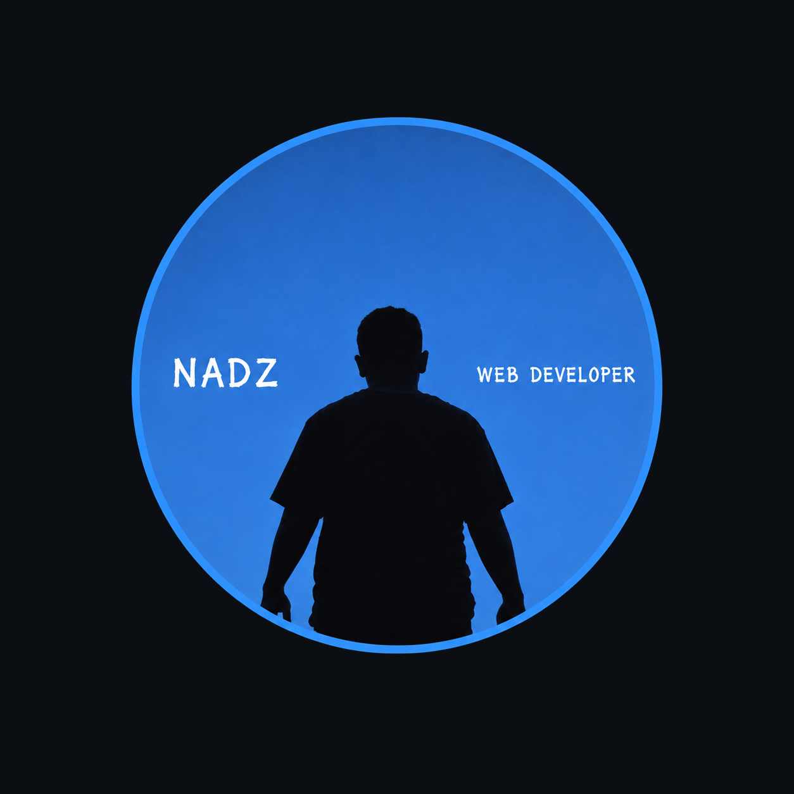

|

+62 815 4841 1960
dimasfirnadi2010@gmail.com
@Dimzz4Sky
Ngentak Polodadi, Sumberharjo, Prambanan, Sleman, DIY.
● HTML
Penyusunan struktur website.
● Desain Web
Membuat tampilan website yang menarik.
● Berpikir Logis
Menganalisis dan menyelesaikan masalah.
● Adaptasi dan Belajar
Cepat mempelajari hal baru.
Saya berharap dapat terus meningkatkan kemampuan di bidang pengembangan web, mempelajari teknologi baru, serta mengembangkan ide menjadi proyek nyata. Saya siap menerima kritik dan saran sebagai bahan evaluasi, menghadapi tantangan dengan sikap terbuka, serta terus memperbaiki kualitas pekerjaan demi menghasilkan website yang bermanfaat dan memberikan pengalaman terbaik bagi pengguna.
|
|
DIMAS BAGUS FIRNADI
CALON PENGEMBANG WEB
Saya merupakan pribadi yang memiliki minat besar dalam bidang pengembangan web serta semangat untuk terus belajar dan berkembang. Saya memiliki ketertarikan dalam membangun website yang menarik, rapi, dan mudah digunakan. Saya juga terbiasa berpikir logis, teliti dalam mengerjakan tugas, serta berusaha menyelesaikan setiap proyek dengan sebaik mungkin. Saya percaya bahwa kemauan untuk terus belajar, kreativitas, dan tanggung jawab merupakan bekal penting untuk menjadi pengembang web yang kompeten.
SMK NEGERI 2 YOGYAKARTA (2026-Saat ini)
Sistem Informasi Jaringan Aplikasi
SMP NEGERI 1 KALASAN (2023-2026)
Honors Class
SD NEGERI BLEBER 1 (2017-2023)
Regular Class
TK ABA BLEBER (2015-2017)
Regular Class
KB PUSPITASARI (2013-2014)
Regular Class
Wakil Ketua Kelas SMPN 1 KALASAN
2023-2024
Anggota Desain Grafis SMPN 1 KALASAN
2023-2024
Sekretaris Dewan Penggalang SMPN 1 KALASAN
2023-2025
Anggota Osis Bidang Teknologi, Informasi, Komunikasi SMPN 1 KALASAN
2024-2025
Calon Dewan Ambalan SMKN 2 YOGYAKARTA
2026-Saat ini
|
|